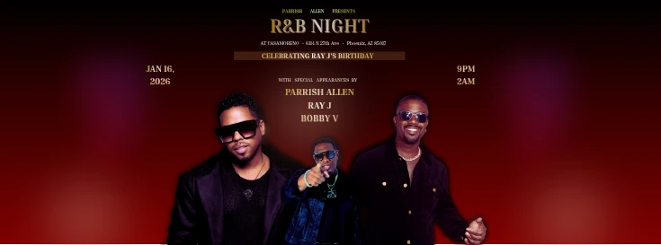
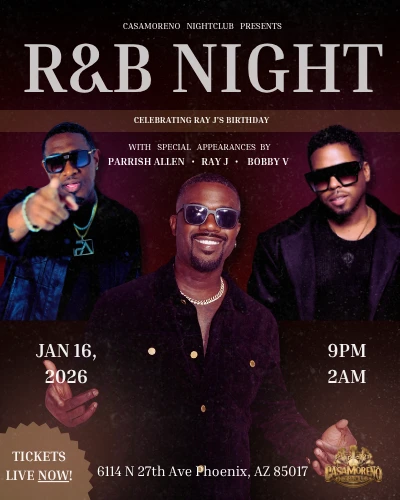
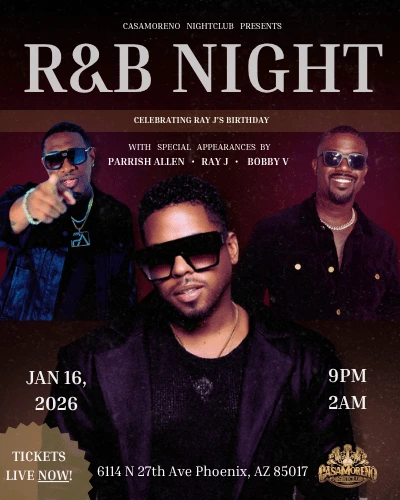
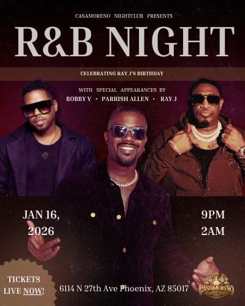
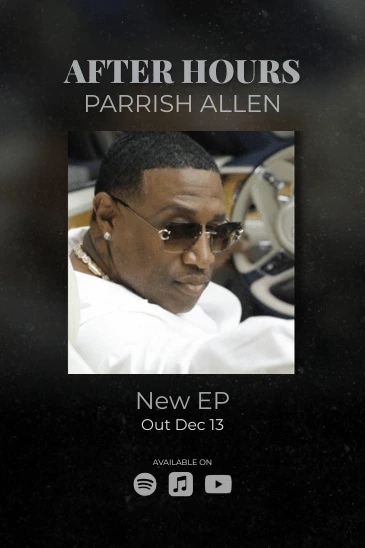

Existing listeners
People already familiar with Parrish who needed timely reasons to engage and attend.
I combined social-media strategy, promotional design, and hands-on event execution to support Parrish Allen’s visibility and bookings.
4 min read · Original project artifacts

Parrish Allen is an R&B recording artist whose marketing work connected music promotion with live events and audience growth. My engagement combined social-media strategy, promotional design, and the practical work of supporting an artist’s public presence.
The project included promoting, hosting, and managing an event featuring Parrish alongside established recording artists Ray J and Bobby V. The available creative also includes release promotion for the After Hours EP, showing how the artist’s work extended beyond one event.
I developed the social-media marketing strategy and handled campaign and event responsibilities. My contribution brought together messaging, promotional graphics, content coordination, hosting, and execution.
This required attention to both the audience-facing experience and the activity behind it. A promotional design could create interest, but the event details, artist positioning, and delivery also had to support that interest.
An artist campaign has several jobs at once: build recognition, give people a reason to pay attention now, and provide a clear next step. A live event adds practical information such as the lineup, date, time, venue, and entry details.
The challenge was to make the campaign visually engaging while preserving that information hierarchy. The materials also needed to connect the artist’s longer-term identity with a specific event or release.
People already familiar with Parrish who needed timely reasons to engage and attend.
People discovering him through event promotion, associated artists, or social content.
Collaborators who needed clear promotional material and a coordinated public message.
I developed the artist’s social-media marketing strategy around the work being promoted, linking audience growth with event and release visibility. The campaign needed to make clear who Parrish was and why someone should engage with this particular moment.
The work joined strategy and production: promotional materials were part of a broader effort to attract attention and support participation rather than isolated design exercises.
The R&B Night creative places the event identity, artist lineup, date, and location within one recognizable composition. Artist photography and a dark, warm palette establish the atmosphere while the information tells the audience what is happening.
The gallery includes several layout variations and a banner adaptation. Those formats let the campaign travel across different placements while retaining the core event message.
My responsibilities extended to hosting and managing the event. That connected what people saw in the promotion with the experience they encountered in person.
The event work reinforced the importance of accurate details and clear communication. A campaign’s success depends partly on whether the audience can move from interest to participation without confusion.
The After Hours EP creative shifts from an event lineup to the artist and the release itself. The visual emphasis changes with the communication goal while keeping Parrish central to the story.
This broader body of work supported an ongoing public presence, bringing together live performance, release promotion, and social strategy rather than relying entirely on one promotional moment.
The creative and event work served distinct but connected audience needs.
| What mattered | The response | Why it mattered |
|---|---|---|
| The event had several artists and practical details. | Create a clear hierarchy for lineup, timing, location, and participation. | Make the promotion useful as well as visually engaging. |
| Different placements required different compositions. | Develop poster variations and a banner adaptation. | Keep the campaign recognizable across formats. |
| The artist needed visibility beyond a single performance. | Support release promotion alongside event content. | Connect immediate attention with the wider artist identity. |
| Promotion and live delivery were linked. | Carry responsibilities into hosting and event management. | Support continuity between the invitation and the experience. |
The gallery includes R&B Night promotion, campaign variations, and After Hours release creative.






The campaign strategy and event work helped Parrish gain 2,500 new followers in one month and supported subsequent bookings for a national tour across 14 venues, as recorded in my updated résumé.
The creative deliverables include event posters, banner adaptations, and EP-release designs. The tour figure describes a subsequent booking outcome supported by the work; it does not mean I managed all 14 tour dates.
This engagement showed me how closely creative work and operations can be connected. The campaign set expectations, and the live event made those expectations tangible.
I would bring the same combined perspective to future brand work: understand the audience, make the message clear, and account for what has to happen after someone responds to the promotion.
{kind=link}
{kind=link}
{kind=link}
{kind=link}
{kind=link}